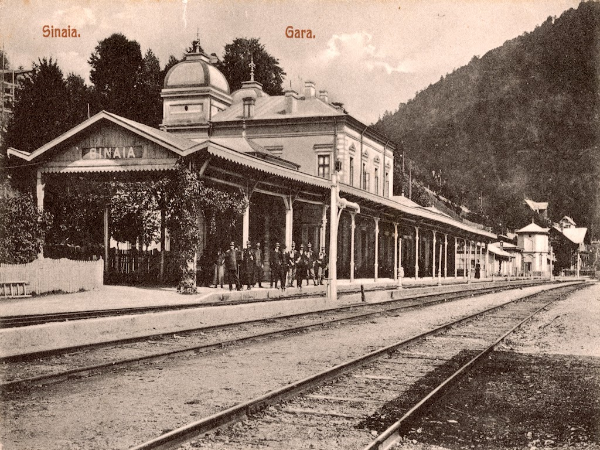
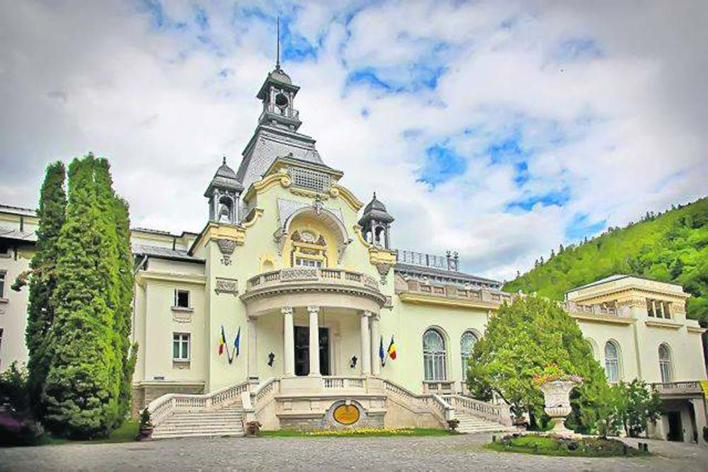

Sinaia is a town and a mountain resort in Prahova County, Romania. It is situated in the historical region of Muntenia. The town was named after the Sinaia Monastery of 1695, around which it was built. The monastery in turn is named after the Biblical Mount Sinai. King Carol I of Romania built his summer home, Peleș Castle, near the town in the late nineteenth century. The city is a popular destination for hiking and winter sports, especially downhill skiing. Among the tourist landmarks, the most important are Peleș Castle, Pelișor Castle, Sinaia Monastery, Sinaia Casino, Sinaia train station, and the Franz Joseph and Saint Anne Cliffs. Sinaia was also the summer residence of the Romanian composer George Enescu, who stayed at the Luminiș villa.
- History

- The often forested area on the Prahova Valley, where the city of Sinaia is today, was uninhabited in the 17th century, the first inhabitants to settle in the virgin forest here, at the foot of the Bucegi Mountains, being the monks of the Sinaia monastery, founded between 1690- 1695 by the great backer Mihai Cantacuzino, as well as some scutelnici who were in charge of guarding the monastery and cultivating its estates. The city took its name from the monastery, and the monastery was named after the journey back to St. Catherine's Monastery on the Sinai Peninsula. At the beginning of the 19th century, the entire Prahova Valley was organized as a single commune, called the Neagului Bridge, covering the entire valley, from Predeal to Posada. In 1864, the hamlets of Posada and Podul Neagului were attached to the commune of Comarnic. On August 5, 1866, Prince Carol I of Romania arrived at the Sinaia Monastery, located at that time in the commune of Podul Neagului. He became involved in the organization of the region and, in 1874, the hamlets left outside the commune of Comarnic received the name of Sinaia, a commune with residence in Busteni. A report dated December 1, 1874 attests that the residence of Podul Neagului commune was moved to Sinaia, which received its name that year (from that of the Sinaia Monastery, whose name in turn comes from that of the Mountain Sinai). On May 9, 1880, Sinaia acquired the status of an urban commune and included the hamlets of Izvor, Furnica and Poiana Țapului. The inner city of Sinaia was thus separated from the domain of Podul Neagului commune, which moved its residence back to Comarnic. In 1884, the hamlets of Predeal, Azuga, Bușteni and Poiana Țapului separated from Sinaia, forming the commune of Predeal, while the commune of Sinaia remained with the hamlets of Izvoru and Furnica. During the same period, the Romanian royal family established their summer residence in Sinaia, building the Peles castle complex. At the end of the 19th century, the commune had a population of 2210 inhabitants, a mixed school attended in 1899 by 103 students, hotels, Ploiești-Brașov railway station, hydrotherapy clinic and Sinaia monastery. Also in that period, the city began to become an industrialized one, defending a lumber factory, owned by the industrialists Popovici and Costinescu, the latter also owning a hydraulic lime factory. Also, in January 1892, an iron nail factory was opened, which had 45 employees, Romanian and German. From an administrative point of view, the commune was the residence of Peleșul in Prahova County. In 1925, the Socec Yearbook records that Sinaia had a sewerage system and running water, supplied from the Peles and Vânturiș springs, as well as a hydroelectric plant with 1500 horsepower that supplied the public electric lighting system. Towards the end of the interwar period, Sinaia had 3906 inhabitants and was the residence of the Sinaia Plain in Prahova County. In 1950, Sinaia passed into the administration of Câmpina district in the Prahova region and, after 1952, in the Ploiești region. In 1968, Prahova County was re-established, Sinaia becoming part of it again.
Historical monuments

In the city of Sinaia there are eleven historical monuments of architecture of national interest: Sinaia Casino; Caraiman Hotel; the villa of Alina Știrbei; villa Emil Costinescu; the whole of Sinaia station, consisting of the royal station and the passenger station; the house of the historian Nicolae Iorga; Hotel "Furnica"; Palace Hotel; Villa Take Ionescu; the house of the composer George Enescu; Sinaia monastery, ensemble consisting of the church “Assumption of the Blessed Virgin Mary”, chapel, abbey, cells and the wall of the old precinct; last but not least, the whole of Peles Castle, consisting of the actual castle, Pelisor Castle, Foisor Castle, Economat Villa, power plant, Ceramics House, Knights Villa, Șipot Villa, Villa Casa Veche, Casa Nouă villa, villas A, B and C, and the park. Also of national interest are the public forum monument represented by the bust of the actor Ion Iancu Brezieanu located in the central park "Dimitrie Ghica", as well as the memorial or funerary monuments in the cemetery of the heroes of the First World War and the Tomb of Take Ionescu located in the old precinct of the Sinaia monastery.
The museum of Sinaia, the newest tourist attraction of the resort, the former Stirbey Castle is one of the oldest holiday residences built in Sinaia, between 1874-1875, by Princess Alina Stirbey and her husband General Ioan Emanuel Florescu, according to the plans of the Dutch architect Josef Jacob Schieffeleers. The Stirbey domain in Sinaia is considered to have been one of the most beautiful domains belonging to the family. The castle, which has the architecture specific to the German romantic style, typical of mountain resorts, was surrounded by a natural park, and the facade was mirrored in a small natural lake fed by a stream. Near the castle, in the same park, there is a chapel of the Stirbey family, painted by Gheorghe Tattarescu.